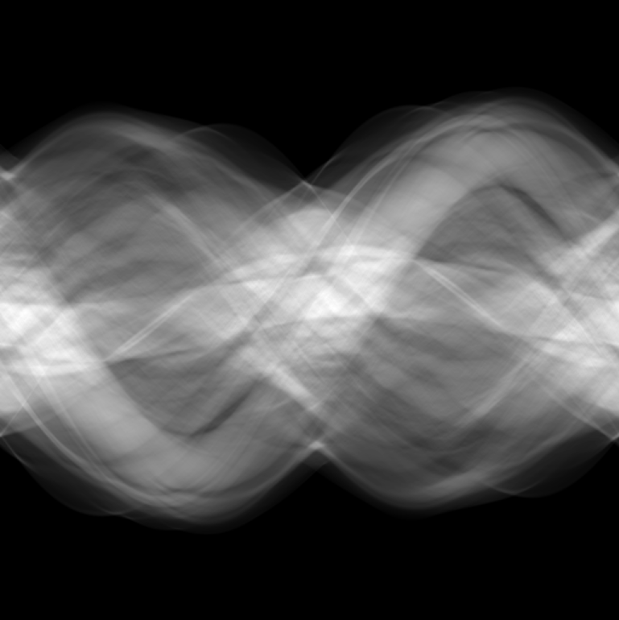

MA Final Presentation
Differentiable projection operations for X-ray computed tomography
David Frank
28th April, 2022
Slides are available at: https://ner0-m.github.io/ma-final-presentation/
What are projection operations?
- Approximations of the physical forward model.
- Forward model: Mathematical description of physical capturing process
- For X-ray attenuation CT: Radon/X-ray Transform
Lateral slice of human abdomen

Forward projection of such a abdomen phantom
Why are should the projection operation be differentiable?
Differentiability needed in the forward model of differentiable phase-contrast CT. Without differentiable basis, numerical differentiation is necessary.
On the way to differentiable projection operators
Discretization using series expansion
\[
f \approx \hat{f}(\cdot) = \sum_{i=1}^{I} c_i b(\cdot - x_i) = \sum_{i=1}^{I}
c_i b_i(\cdot)
\]
Discretization using series expansion
\[
A(\hat{f}) = \sum_{i=1}^{I} c_i A(b_i)
\]
2D-Basis
Radon Transform
Pixel basis
B-Spline basis


Blob basis


Implementation of projection operators
Classical Ray-driven approach for pixel basis
Classical Ray-driven approach for pixel basis

Ray-driven approach for B-Spline and Blob basis

Ray-driven approach for B-Spline and Blob basis

Results
Quality overview
Blob projector*
B-Spline projector*
Siddon's projector


* Blob projector uses \(a=2\), \(m=2\), \(\alpha=10.83\) as parameters, and cubic B-Splines
(i.e. \(d = 3\)) are used.
2D Performance overview
| Projectors | ||
| Siddon's | Cubic B-Spline ↓ | Blob ↓ |
| 1.0 | 6.58 | 6.45 |
3D Performance overview
| Projectors | ||
| Siddon's | Cubic B-Spline ↓ | Blob ↓ |
| 1.0 | 22.7 | 22.4 |